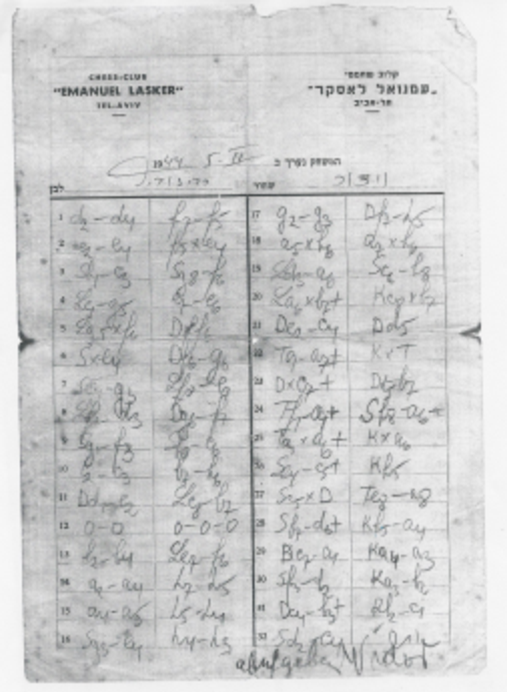

Testimonials
“One of the greatest tacticians in the country.”
“An exemplary blitz player.”
— Saul Hon, Ptichot Be'Sachmat (Chess Openings), 1965.
“Known as a superb tactician.”
— Shlomo Kandelshine, Ha'Lochem (Aloni's biography).
“One of the most brilliant combinations ever made in the country.” (about Barav – Vidor, 1944)
— Aryeh L. Mohilever, in Barav's obituary, Shachmat.
“The ‘stormy petrel’ of [Palestinian] chess players, who delights in brilliant combinations.”
— Palestine Post, April 25th, 1945, p. 2 (reporting Barav's 3rd place in the 1945 championship).
“This game is, in many's estimate (and it is hard to disagree) the most sparklingly brilliant of the combinative games played in our country. Its place in the world's chess literature is secure, and justly so.”
— Raafi Persitz, Masters' Chess Tournament (Tacharut Amanim Be'Sachmat), 2nd Ed., 1958, about Barav – Vidor, whose original scoresheet is below:
